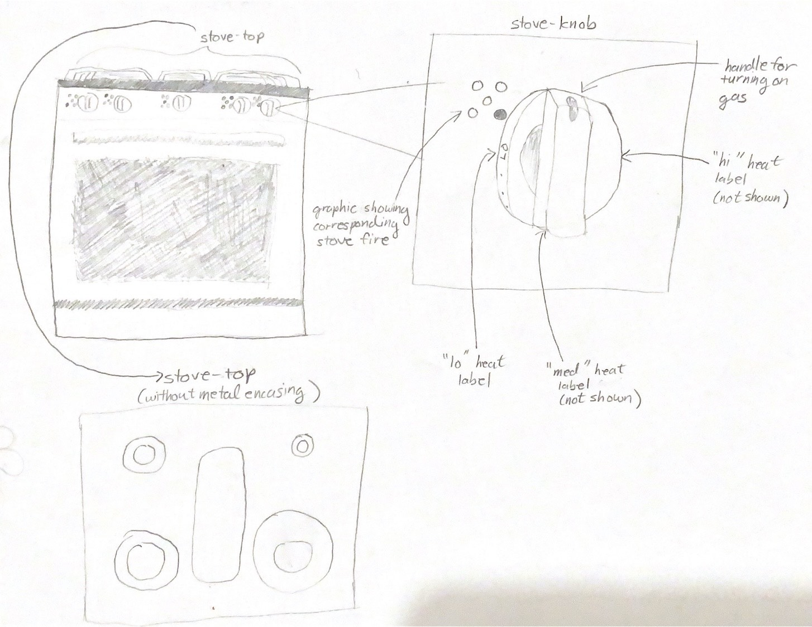

The kitchen stove at my off-campus apartment kitchen (chosen due to social-distancing guidelines, as allowed by the handout) tries to create a low-effort process for cooking in the kitchen. The stove features knobs that correspond to 5 stove fires, which increase in fire strength from back right counterclockwise to front right, with the middle fire being the largest with an almost rectangular shape that takes up most of the middle of the stove. The stove fires can be turned on by turning a knob, briefly pausing to let the gas light the fire, and then turning the knob to a desired heat.
Most users have turned the wrong knob when turning on a burner and complained about a cramped space when using the stove at the same time as others. In general, users that used the stove more often had more issues with the stove. Most users use other appliances, such as the microwave, instead of the stove sometimes for time-saving purposes. However, in general, most users seem to be satisfied with their experiences with the stove.
Healthy Heather is a 4th year undergraduate student from Los Angeles, California, who lives off-campus. She cooks most of her meals to try to stay healthy, so she uses the stove every day to cook her daily meals. She lives with 3 other roommates who have been her close friends since freshman year of college. She is 5 feet tall.
Healthy Heather faces a few interface challenges: (1) she often uses multiple burners at a time when she cooks and sometimes turns the wrong knob when adjusting the heat for a certain burner, (2) when others are also using the stove, she often doesn’t have enough space to cook comfortably, and (3) she finds it difficult to reach the burners in the back.
Healthy Heather represents a combination of the users I interviewed. One user cooks every day using the stove. Moreover, most users who do cook often have turned the wrong knob before and complain of having little space when cooking at the same time as others. One mentioned that the burners in the back are difficult to reach.
Busy Betty is a 3rd year undergraduate student from NYC double-concentrating in Computer Science and Electrical Engineering. She rarely has free time, so she usually orders her meals on UberEats. However, when she does cook, she uses the stove instead of other appliances because she wants to get her practice on with “real cooking.”
Busy Betty faces two main problems with the stove interface: (1) she is not used to cooking, so when she does cook, she often turns the wrong knob and (2) she often messes up when turning on the burner and doesn’t know how long to hold the knob in place for the gas to light the fire.
Busy Betty represents a combination of the users I interviewed. One user only cooks once a month, opting to order takeout instead. Another user often has trouble turning on the burner correctly. Finally, most users have turned the wrong knob when turning on a certain burner.